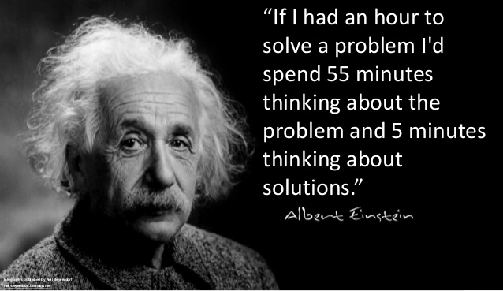
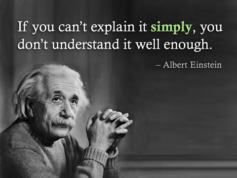

"Jak to się dzieje, że nikt mnie nie rozumie, a wszyscy mnie uwielbiają?"
 Albert Einstein urodził się w rodzinie żydowskiej z miejscowości Ulm (Niemcy). Zaczął szkołę w Munich w roku 1886. Od 1891 roku studiował matematykę. W 1894 roku jego rodzina przeprowadziła się do Milan ale on został w Munich. Uczęszczał on do szkoły średniej w Aarau. W międzyczasie napisał esej, w którym opisywał swoje plany na przyszłość. W 1900 roku został nauczycielem matematyki i fizyki, co było jednym z jego zamierzeń opisywanych w eseju. Uniknął służby wojskowej z powodu płaskostopia i żylaków. Przez kilka lat pracował jako nauczyciel, między innymi w wyższej szkole w Winterthur, a potem w prywatnej szkole Schaffhausen. Pracował także na podrzędnym stanowisku w federalnym biurze patentowym w Bern. Mając 26 lat opublikował pracę (Zur Elektrodynamik bewegter Korper) zawierającą podstawowe idee szczególnej teorii względności. W pracy tej wysunął nowe koncepcje czasu i przestrzeni, zerwał z pojęciem czasu absolutnego, łącząc przestrzeń i czas w czterowymiarową czasoprzestrzeń. W 1908 roku Einstein został wykładowcą na Uniwersytecie w Bern. W następnym roku został profesorem fizyki w Uniwersytecie w Zurichu. Zrezygnował wtedy z wykładania i z pracy w biurze patentowym w Bern. W 1911 roku został mianowany profesorem na Uniwersytecie Karl - Ferdinand w Pradze.
 W 1914 roku powrócił do Niemiec ale nie ubiegał się o niemieckie obywatelstwo. Przyjął on pozycję badacza w Akademii Nauki i przewodniczącego na Uniwersytecie w Berlinie. Zaoferowano mu także pozycję dyrektora Instytutu Fizyki w Berlinie imienia Kaiser Wilhelm. W 1915 roku opublikował on ostateczną wersję ogólnej teorii. Był on ubóstwiany w prasie angielskiej. 7 listopada 1919 roku londyński "Times" miał nagłówek "Rewolucja w nauce - Nowa teoria Wszechświata - Poglądy Newtona obalone". W 1920 roku wykłady Einsteina w Berlinie zostały przerwane z powodu demonstracji antyżydowskich. W 1921 r. otrzymał nagrodę Nobla za odkrycie praw zjawiska fotoelektrycznego i prace w zakresie fizyki teoretycznej. W 1933 r. zmuszony został do opuszczenia Niemiec. Objął stanowisko profesora w Institute for Advenced Study w Princeton (USA). W czasie II wojny światowej popierał prace zmierzające do budowy bomby jądrowej, jednak po wojnie uznał, że dalsza rozbudowa arsenału jądrowego zagraża istnieniu ludzkości, przed czym nieraz publicznie ostrzegał. Po śmierci pierwszego prezydenta Izraelu w 1952 roku, rząd Izraelu zaoferował Einsteinowi to stanowisko, jednak on odmówił. Przed śmiercią, w roku 1955, usilnie pracował nad unitarną teorią pola. Miał nadzieję, że uda mu się wyjaśnić w jednym wzorze oddziaływanie wzajemne teorii grawitacyjnej z teorią pola elektromagnetycznego. Tydzień przed śmiercią napisał ostatni list adresowany do Bertranda Russela. Einstein został poddany kremacji w Trenton, New Jersey o godzinie 16, 18 kwietnia 1955 roku, czyli w dniu jego śmierci.